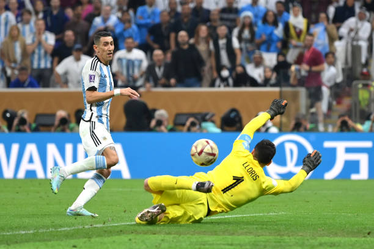
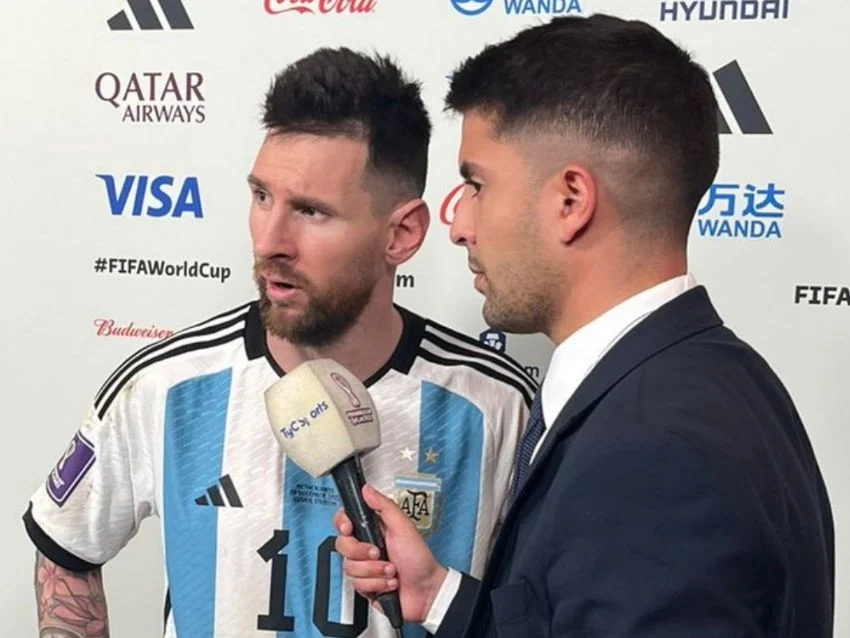

La Despedida de un ANGEL de la Selección
ESPN 20/07/24
Ángel Di María decidió retirarse de la Selección Argentina, bicampeón de la Copa América, pero con 36 años, Fideo quiere seguir jugando y, luego de haber finalizado su contrato con Benfica en junio, ya tiene decidido dónde continuará su carrera.
Seguir LeyendoPeriodista argentino aplicó reconocida “técnica” para que Colombia no anotara en la final de la Copa América
Infobae 15/07/24
La Tricolor cayó contra la Albiceleste en la instancia definitiva del certamen continental disputada en el Hard Rock Stadium de Miami
 Seguir Leyendo